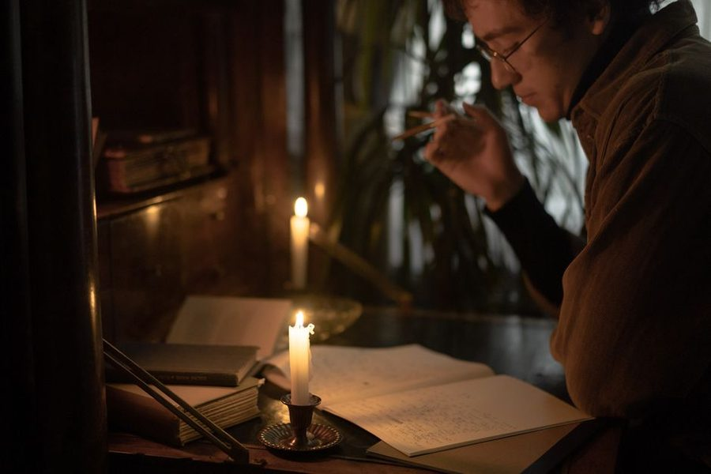
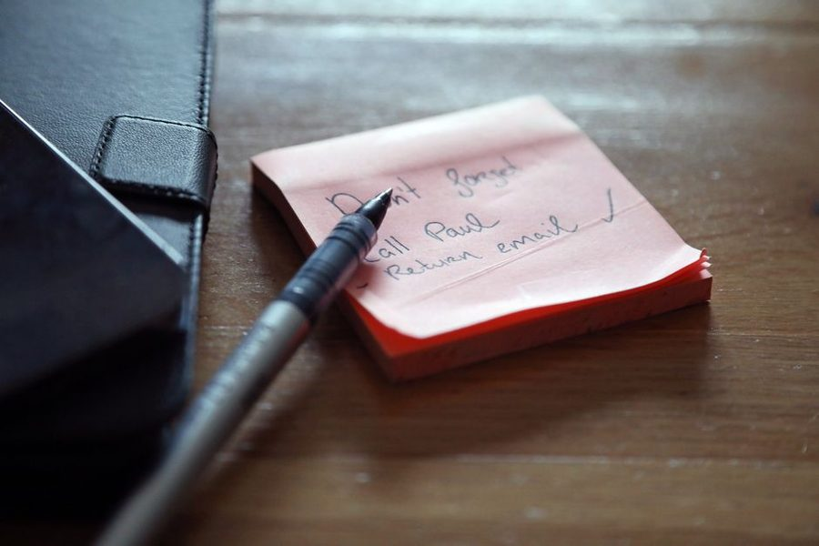
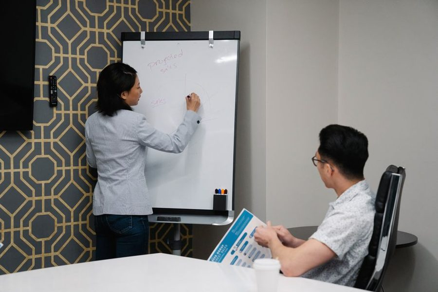

Journal / Working hours
Deep work in an open office
Advice about long, silent blocks of concentration usually assumes a door. Here is the version for a room with forty desks and no walls.
In short
- Aim for two ninety-minute blocks, not four silent hours.
- Use one visible signal, announced once and used consistently.
- Write one line before answering any interruption.
Accept the constraint, then work it
You will not get four uninterrupted hours in an open room, and building a routine that depends on them guarantees failure. Ninety minutes is realistic. Two blocks of ninety minutes is a good day by any honest measure.
The block does not have to be silent, either. What it has to be is uninterrupted by conversation aimed at you — ambient noise is a much smaller problem than a colleague standing at your shoulder with a quick question.
Signals that people respect
Headphones have been diluted into meaninglessness; everyone wears them, including while chatting. A visible, unusual signal works better: a small card propped against the monitor, a specific status in the team chat, a spot at a different desk that the team knows means heads-down.
Whatever the signal, announce it once in a team meeting and use it consistently for a month. Signals fail because they are invented privately and applied unpredictably, not because colleagues are inconsiderate.
Timing beats location
The room has a rhythm — arrivals, the pre-lunch dip, the afternoon burst of chatter. Ten minutes of observation over a few days tells you the two calm windows, and moving your block into one of them beats every noise-cancelling product on the market.
If the calm window is early or late, negotiate the shift rather than the silence. "I start at eight and leave at five" is an easier conversation than "the office is too loud", and it usually solves more.
Protect the re-entry
When a block is broken — and it will be — write one line about where you were before answering. Ten seconds of writing saves several minutes of rebuilding, and it is the difference between an interruption costing two minutes and costing fifteen.
End every block with the same one-line trace even when nothing interrupted you. Consistency means you never have to decide whether this particular stop deserves a note.
What to ask the room for
Most requests aimed at open offices are too large to be granted: fewer people, more walls, a quiet floor. Smaller requests get agreed to in a single conversation — a booked room twice a week, permission to start an hour earlier, one meeting-free morning for the whole team.
The team-wide version is worth pushing for, because a shared quiet block costs nothing and removes the awkwardness of individual signals. When everyone is heads-down on Tuesday morning, nobody has to be the person with the card on the monitor.
If the room genuinely cannot be worked in — a sales floor beside an engineering desk, say — then the honest conversation is about where the work happens rather than about noise levels. Framing it around the output usually goes better than framing it around the decibels.
The cost of being interruptible
In a shared room, part of the attention is permanently allocated to monitoring: someone approaching, a name mentioned nearby, a conversation that might become your problem. This runs whether or not anyone actually interrupts you, and it is why an hour at a quiet desk and an hour at a busy one are not the same hour.
It is also why facing the room is worse than facing away from it, and why a seat near a walkway costs more than the same seat two metres further in. These are small, free adjustments that are rarely made because nobody frames desk position as an attention decision.
Where seating is fixed, the equivalent adjustment is temporal: take the block when the walkway is quiet. Observation over three days is enough to find the window, and the window is usually earlier than people expect.
Working around the meeting rota
Open-plan noise is only half the problem. The other half is a calendar where meetings arrive at eleven and two, leaving segments too short to start anything demanding.
The lever here is not focus technique but scheduling: ask for your meetings to be clustered in the afternoon, and defend one morning entirely. Framed as a request about the team's output rather than about your preferences, this is usually granted, because the person scheduling has no attachment to eleven o'clock.
When the rota cannot move, adjust the ambition instead. A forty-minute segment is enough for revising, reviewing or replying carefully — work that has a natural stopping point every few minutes. Save the work that needs a running start for the one morning you managed to protect, and stop treating the fragments as failed deep work.
The Thursday letter
One short piece a week — usually a method someone on the desk tried and either kept or dropped. No attachments, no course, no schedule creep.
Also on the desk

The shutdown note: five lines that stop work following you home
Routines

Task lists that survive Tuesday
Planning

Meetings that earn their slot
Working hours